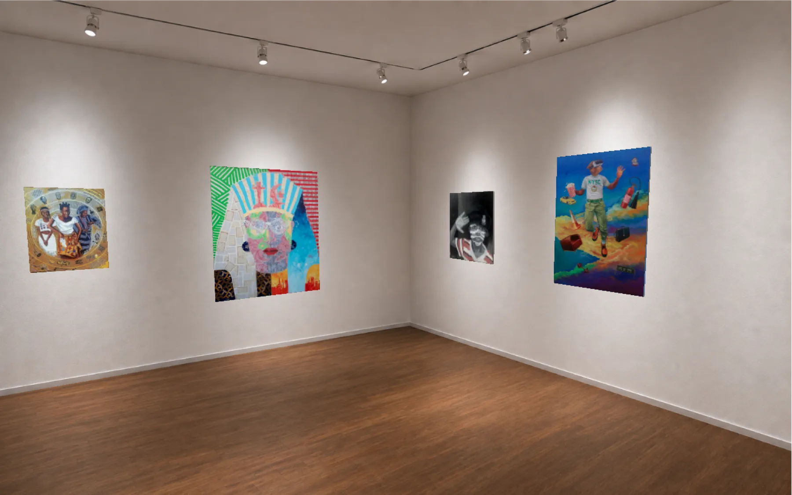
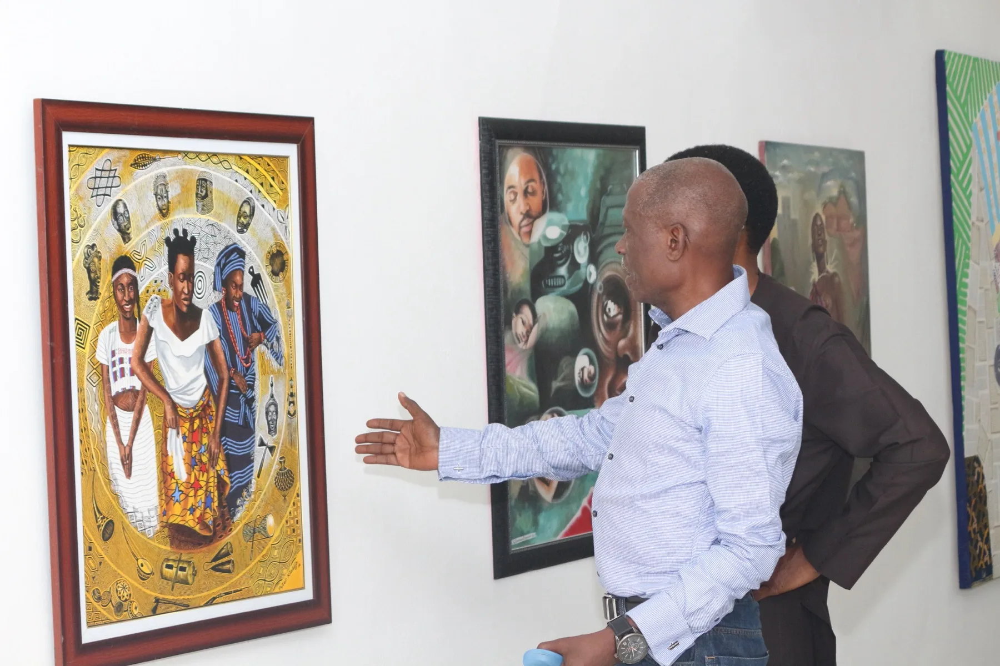
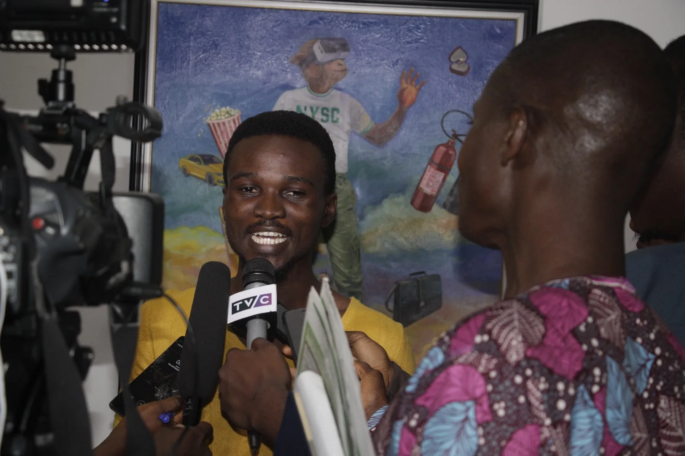
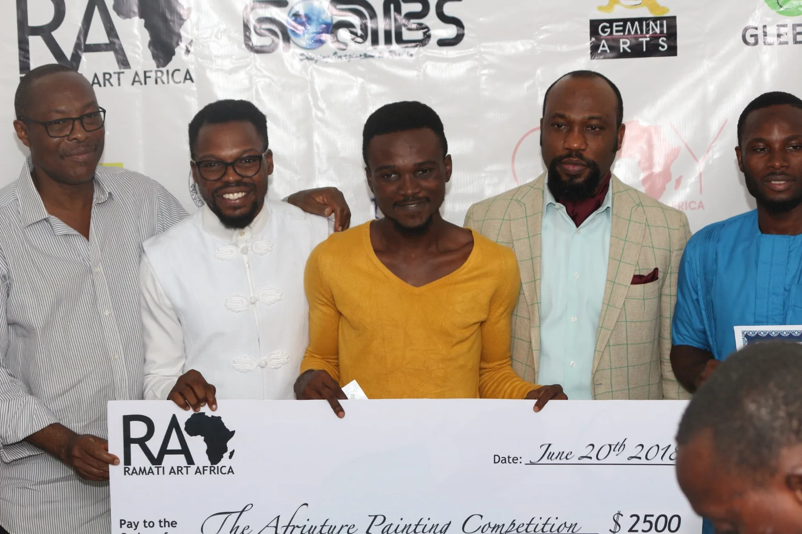

Ramati Art Group — formerly Ramati Art Africa
A work can be seen and still have no record.
For eight years we backed emerging Nigerian artists with grants, mentorship and exhibitions. We are rebuilding around the thing that outlasts all of it — the record of what was made, by whom, and who has held it since.
01 / Origin
Africa's first virtual gallery.
Ramati Art Group was founded in 2017 by Adáramátì Shògo as Africa's first virtual gallery for emerging visual artists in Nigeria.
Over eight years the work was direct. Afriuture, our annual competition for artists aged 18 to 35, put a $2,500 grant, mentorship and exhibition behind one artist a year.
Alongside it we staged exhibitions with organisations including the Commonwealth Africa Initiative at international conferences, on critical social and cultural themes, and reinvested a portion of the proceeds back into the programmes.
The report documented four Nigerian online art platforms that year. Ours was the only one offering 3-D and virtual reality experiences of art shows.
Cited in
"An online gallery which provides 3-D and virtual reality experiences of art shows." Nigeria Art Market Report 2017 · Foundation for Contemporary and Modern Visual Arts · Features, pp. 36–38Visibility on its own doesn't compound.


02 / Afriuture
The maiden competition, and what came of it.

Julius Agbaje won the first Afriuture. In 2023 he won the Access ART X Prize. He still works closely with us.
Afriuture ran for artists aged 18 to 35 — a $2,500 grant, mentorship, and an exhibition. The prize was never the point; the point was arriving early, before anyone else had.
We worked with others and took them to events across the diaspora, including the Commonwealth Africa conferences — Ken Nwadiogbu, Oladele Ogbeyemi and many more. Several have since won awards of their own and built international careers.
We have been guided throughout by award-winning art masters, curators, collectors and gallerists: Oliver Enwonwu, Nike Okundaye, Remi Oni and Abiodun Olaku among them.
We could not sustain the competition. That is the plain reason we are restructuring, and it is also why the archive matters more than the prize did.

03 / Chronology
Eight years, in record.
Founded in Lagos
Ramati Art Africa launches as Africa's first virtual gallery for emerging Nigerian artists.
Featured in the Nigeria Art Market Report
Listed among Nigeria's online art platforms for providing 3-D and virtual reality experiences of art shows.
Nigeria Art Market Report 2017 ↗The maiden Afriuture
Julius Agbaje wins the first edition: a $2,500 grant, mentorship and exhibition.
Commonwealth Africa Initiative
Exhibitions at international conferences on critical social and cultural themes, and artists taken to events across the diaspora.
Restructuring
The competition pauses. The virtual gallery closes. The work turns toward provenance.
ARcv opens Forthcoming
In build. The archive will open in 2027, and Afriuture will return with it.
arcv.art ↗04 / ARcv
The archive.
ARcv is a permanent record of what was made, by whom, when, and who has held it since.
We no longer operate as a virtual gallery. Both the gallery and the competition were built to solve visibility — and visibility turned out not to be the constraint.
Without provenance a work builds no market, no career, and nothing an artist can leave behind. ARcv launches in 2027.

01
MadeThe artist finishes the work in the studio.
02
CapturedThe work is recorded at the moment of making, not reconstructed years later.
03
HeldEvery transfer of custody is written to the record.
04
ProvenThe record travels with the work, permanently.
05 / Join
Afriuture returns. Help us build the archive.
ARcv opens in 2027, and the competition comes back with it. If you want to be part of building it — as an artist, a collector, a gallery or an institution — we'd like to hear from you.
Join us →